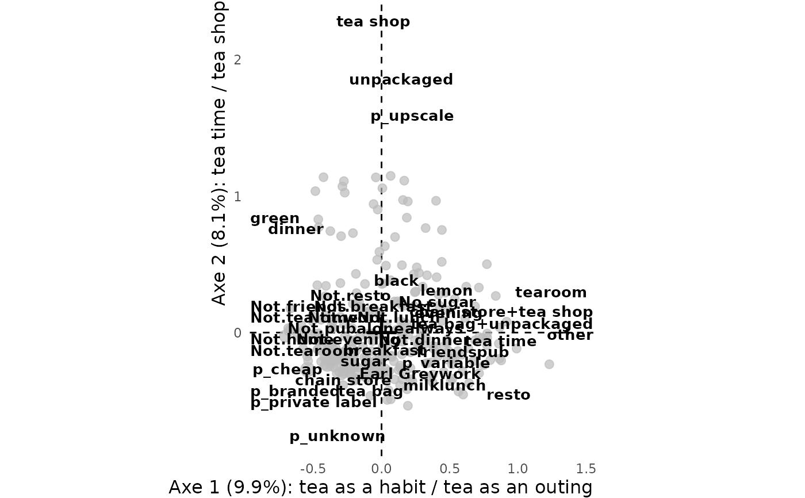

Gives the axes of an analysis the names its interpretation arrived at: every graph
(ggfacto) prints them in its axis titles, and every interpretation table
(interpret) in its axis headings. The names are given in the order of the axes;
an empty name, `""`, leaves an axis unnamed, so that `name_axes(res, "", "")` can wait in a script
to be filled.
Arguments
- res
An analysis made with
multiple_correspondence_analysis,correspondence_analysisorprincipal_component_analysis(or with 'FactoMineR' or 'GDAtools').- ...
The names, as character strings: the first names axis 1, the second axis 2, and so on. A name given as `"3" = "..."` names axis 3 alone, and leaves the others as they are.
Examples
data(tea, package = "FactoMineR")
res.mca <- multiple_correspondence_analysis(tea, 1:18)
interpret(res.mca, axes = 1:2)
#> <div class="tx-scrollbox"><table class="tabxplor-tab" data-quarto-disable-processing="true"><thead><tr><th class="tx-l tx-br tx-bl" rowspan="2"></th><th class="tx-l tx-bl tx-rv" rowspan="2">Question</th><th class="tx-r tx-num tx-br">contrib</th><th class="tx-l tx-br tx-bl" rowspan="2">Positive_levels</th><th class="tx-r tx-num tx-br"> </th><th class="tx-l tx-br tx-bl" rowspan="2">Negative_levels</th><th class="tx-r tx-num tx-br"> </th></tr><tr><th class="tx-r tx-num tx-br tx-unit"><col%></th><th class="tx-r tx-num tx-br tx-unit"><col%></th><th class="tx-r tx-num tx-br tx-unit"><col%></th></tr></thead><tbody><tr><td class="tx-l tx-br tx-bl tx-lbl tx-vname tx-b tx-nb" rowspan="13">Axe 1: 9.9% of variance (mod. 55%)</td><td class="tx-l tx-bl tx-rv">where</td><td class="tx-r tx-num tx-br g2">15.7%</td><td class="tx-l tx-br tx-bl">chain store+tea shop</td><td class="tx-r tx-num tx-br p3 tx-b">11.3%</td><td class="tx-l tx-br tx-bl">chain store</td><td class="tx-r tx-num tx-br m1 tx-b">4.4%</td></tr>
#> <tr><td class="tx-l tx-bl tx-rv">tearoom</td><td class="tx-r tx-num tx-br g2">13.9%</td><td class="tx-l tx-br tx-bl">tearoom</td><td class="tx-r tx-num tx-br p3 tx-b">11.2%</td><td class="tx-l tx-br tx-bl">Not.tearoom</td><td class="tx-r tx-num tx-br m1 tx-b">2.7%</td></tr>
#> <tr><td class="tx-l tx-bl tx-rv">how</td><td class="tx-r tx-num tx-br g2">11.2%</td><td class="tx-l tx-br tx-bl">tea bag+unpackaged</td><td class="tx-r tx-num tx-br p2 tx-b">6.8%</td><td class="tx-l tx-br tx-bl">tea bag</td><td class="tx-r tx-num tx-br m1 tx-b">4.3%</td></tr>
#> <tr><td class="tx-l tx-bl tx-rv">friends</td><td class="tx-r tx-num tx-br g2">9.1%</td><td class="tx-l tx-br tx-bl">friends</td><td class="tx-r tx-num tx-br p1 tx-b">3.2%</td><td class="tx-l tx-br tx-bl">Not.friends</td><td class="tx-r tx-num tx-br m2 tx-b">6.0%</td></tr>
#> <tr><td class="tx-l tx-bl tx-rv">resto</td><td class="tx-r tx-num tx-br g2">8.5%</td><td class="tx-l tx-br tx-bl">resto</td><td class="tx-r tx-num tx-br p2 tx-b">6.3%</td><td class="tx-l tx-br tx-bl">Not.resto</td><td class="tx-r tx-num tx-br m1 tx-b">2.2%</td></tr>
#> <tr><td class="tx-l tx-bl tx-rv">price</td><td class="tx-r tx-num tx-br g2">8.1%</td><td class="tx-l tx-br tx-bl">p_variable</td><td class="tx-r tx-num tx-br p1 tx-b">3.5%</td><td class="tx-l tx-br tx-bl">p_branded</td><td class="tx-r tx-num tx-br m1 tx-b">3.0%</td></tr>
#> <tr><td class="tx-l tx-bl tx-rv">tea.time</td><td class="tx-r tx-num tx-br g2">7.2%</td><td class="tx-l tx-br tx-bl">tea time</td><td class="tx-r tx-num tx-br p1 tx-b">3.1%</td><td class="tx-l tx-br tx-bl">Not.tea time</td><td class="tx-r tx-num tx-br m1 tx-b">4.1%</td></tr>
#> <tr><td class="tx-l tx-bl tx-rv">pub</td><td class="tx-r tx-num tx-br g2">5.5%</td><td class="tx-l tx-br tx-bl">pub</td><td class="tx-r tx-num tx-br p1 tx-b">4.4%</td><td class="tx-l tx-br tx-bl"></td><td class="tx-r tx-num tx-br g1"></td></tr>
#> <tr><td class="tx-l tx-bl tx-rv">work</td><td class="tx-r tx-num tx-br g2">4.2%</td><td class="tx-l tx-br tx-bl">work</td><td class="tx-r tx-num tx-br p1 tx-b">3.0%</td><td class="tx-l tx-br tx-bl"></td><td class="tx-r tx-num tx-br g1"></td></tr>
#> <tr><td class="tx-l tx-bl tx-rv">How</td><td class="tx-r tx-num tx-br g2">3.9%</td><td class="tx-l tx-br tx-bl">other</td><td class="tx-r tx-num tx-br p1 tx-b">2.3%</td><td class="tx-l tx-br tx-bl"></td><td class="tx-r tx-num tx-br g1"></td></tr>
#> <tr><td class="tx-l tx-bl tx-rv">Tea</td><td class="tx-r tx-num tx-br g2">3.4%</td><td class="tx-l tx-br tx-bl"></td><td class="tx-r tx-num tx-br g1"></td><td class="tx-l tx-br tx-bl">green</td><td class="tx-r tx-num tx-br m1 tx-b">3.0%</td></tr>
#> <tr><td class="tx-l tx-bl tx-rv">lunch</td><td class="tx-r tx-num tx-br g2">2.8%</td><td class="tx-l tx-br tx-bl">lunch</td><td class="tx-r tx-num tx-br p1 tx-b">2.4%</td><td class="tx-l tx-br tx-bl"></td><td class="tx-r tx-num tx-br g1"></td></tr>
#> <tr class="tx-b tx-bt tx-bb tx-bb2"><td class="tx-l tx-bl tx-rv">Above mean ctr</td><td class="tx-r tx-num tx-br tx-b">87.0%</td><td class="tx-l tx-br tx-bl"></td><td class="tx-r tx-num tx-br tx-b">57.3%</td><td class="tx-l tx-br tx-bl"></td><td class="tx-r tx-num tx-br tx-b">29.6%</td></tr>
#> <tr><td class="tx-l tx-br tx-bl tx-lbl tx-vname tx-b tx-bb2" rowspan="5">Axe 2: 8.1%<br>of variance<br>(mod. 28%)</td><td class="tx-l tx-bl tx-rv">where</td><td class="tx-r tx-num tx-br g2">28.6%</td><td class="tx-l tx-br tx-bl">tea shop</td><td class="tx-r tx-num tx-br p4 tx-b">23.9%</td><td class="tx-l tx-br tx-bl">chain store</td><td class="tx-r tx-num tx-br m2 tx-b">4.6%</td></tr>
#> <tr><td class="tx-l tx-bl tx-rv">price</td><td class="tx-r tx-num tx-br g2">25.6%</td><td class="tx-l tx-br tx-bl">p_upscale</td><td class="tx-r tx-num tx-br p3 tx-b">20.5%</td><td class="tx-l tx-br tx-bl">p_branded</td><td class="tx-r tx-num tx-br m1 tx-b">2.5%</td></tr>
#> <tr><td class="tx-l tx-bl tx-rv">how</td><td class="tx-r tx-num tx-br g2">23.4%</td><td class="tx-l tx-br tx-bl">unpackaged</td><td class="tx-r tx-num tx-br p3 tx-b">18.9%</td><td class="tx-l tx-br tx-bl">tea bag</td><td class="tx-r tx-num tx-br m2 tx-b">4.5%</td></tr>
#> <tr><td class="tx-l tx-bl tx-rv">Tea</td><td class="tx-r tx-num tx-br g2">7.3%</td><td class="tx-l tx-br tx-bl">green</td><td class="tx-r tx-num tx-br p1 tx-b">3.3%</td><td class="tx-l tx-br tx-bl">Earl Grey</td><td class="tx-r tx-num tx-br m1 tx-b">2.4%</td></tr>
#> <tr class="tx-b tx-bt tx-bb tx-bb2"><td class="tx-l tx-bl tx-rv">Above mean ctr</td><td class="tx-r tx-num tx-br tx-b">80.5%</td><td class="tx-l tx-br tx-bl"></td><td class="tx-r tx-num tx-br tx-b">66.6%</td><td class="tx-l tx-br tx-bl"></td><td class="tx-r tx-num tx-br tx-b">13.9%</td></tr></tbody><tfoot><tr><td colspan="7"><div class="tx-foot">Contribution to the variance of the axis: a level on the positive side, contributing <span class="p1" style="font-weight:bold;">×1</span>; <span class="p2" style="font-weight:bold;">×2</span>; <span class="p3" style="font-weight:bold;">×5</span>; <span class="p4" style="font-weight:bold;">×10</span> the mean contribution; a level on the negative side, contributing <span class="m1" style="font-weight:bold;">×1</span>; <span class="m2" style="font-weight:bold;">×2</span>; <span class="m3" style="font-weight:bold;">×5</span>; <span class="m4" style="font-weight:bold;">×10</span> the mean contribution.<br><b>contrib</b>: the whole question's contribution to the axis</div></td></tr></tfoot></table></div>
#> <div class="tx-scrollbox"><table class="tabxplor-tab" data-quarto-disable-processing="true"><thead><tr><th class="tx-l tx-br tx-bl tx-rv" rowspan="2">Axe</th><th class="tx-r tx-num">eigenvalue</th><th class="tx-r tx-num">% variance</th><th class="tx-r tx-num tx-br">cumul.</th><th class="tx-r tx-num">Benzecri's<br>modified rate</th><th class="tx-r tx-num tx-br">cumul. mod.</th></tr><tr><th class="tx-r tx-num tx-unit"><var></th><th class="tx-r tx-num tx-unit"><col%></th><th class="tx-r tx-num tx-br tx-unit"></th><th class="tx-r tx-num tx-unit"><col%></th><th class="tx-r tx-num tx-br tx-unit"></th></tr></thead><tbody><tr><td class="tx-l tx-br tx-bl tx-rv">Axe 1</td><td class="tx-r tx-num g2">0.148</td><td class="tx-r tx-num g2 tx-bar tx-bar-on" style="--tx-bar:100%">9.9%</td><td class="tx-r tx-num tx-br g2">9.9%</td><td class="tx-r tx-num g2">55.4%</td><td class="tx-r tx-num tx-br g2">55.4%</td></tr>
#> <tr><td class="tx-l tx-br tx-bl tx-rv">Axe 2</td><td class="tx-r tx-num g2">0.122</td><td class="tx-r tx-num g2 tx-bar tx-bar-on" style="--tx-bar:82%">8.1%</td><td class="tx-r tx-num tx-br g2">18.0%</td><td class="tx-r tx-num g2">28.1%</td><td class="tx-r tx-num tx-br g2">83.4%</td></tr>
#> <tr><td class="tx-l tx-br tx-bl tx-rv">Axe 3</td><td class="tx-r tx-num g2">0.090</td><td class="tx-r tx-num g2 tx-bar tx-bar-on" style="--tx-bar:60.7%">6.0%</td><td class="tx-r tx-num tx-br g2">24.0%</td><td class="tx-r tx-num g2">7.6%</td><td class="tx-r tx-num tx-br g2">91.1%</td></tr>
#> <tr><td class="tx-l tx-br tx-bl tx-rv">Axe 4</td><td class="tx-r tx-num g2">0.078</td><td class="tx-r tx-num g2 tx-bar tx-bar-on" style="--tx-bar:52.6%">5.2%</td><td class="tx-r tx-num tx-br g2">29.2%</td><td class="tx-r tx-num g2">3.3%</td><td class="tx-r tx-num tx-br g2">94.3%</td></tr>
#> <tr><td class="tx-l tx-br tx-bl tx-rv">Axe 5</td><td class="tx-r tx-num g2">0.074</td><td class="tx-r tx-num g2 tx-bar tx-bar-on" style="--tx-bar:49.7%">4.9%</td><td class="tx-r tx-num tx-br g2">34.1%</td><td class="tx-r tx-num g2">2.1%</td><td class="tx-r tx-num tx-br g2">96.5%</td></tr>
#> <tr><td class="tx-l tx-br tx-bl tx-rv">Axe 6</td><td class="tx-r tx-num g2">0.071</td><td class="tx-r tx-num g2 tx-bar tx-bar-on" style="--tx-bar:48.1%">4.8%</td><td class="tx-r tx-num tx-br g2">38.9%</td><td class="tx-r tx-num g2">1.6%</td><td class="tx-r tx-num tx-br g2">98.1%</td></tr>
#> <tr><td class="tx-l tx-br tx-bl tx-rv">Axe 7</td><td class="tx-r tx-num g2">0.068</td><td class="tx-r tx-num g2 tx-bar tx-bar-on" style="--tx-bar:45.7%">4.5%</td><td class="tx-r tx-num tx-br g2">43.4%</td><td class="tx-r tx-num g2">1.0%</td><td class="tx-r tx-num tx-br g2">99.1%</td></tr>
#> <tr><td class="tx-l tx-br tx-bl tx-rv">Axe 8</td><td class="tx-r tx-num g2">0.065</td><td class="tx-r tx-num g2 tx-bar tx-bar-on" style="--tx-bar:44.1%">4.4%</td><td class="tx-r tx-num tx-br g2">47.7%</td><td class="tx-r tx-num g2">0.6%</td><td class="tx-r tx-num tx-br g2">99.7%</td></tr>
#> <tr class="tx-bt"><td class="tx-l tx-br tx-bl tx-rv">... of 27</td><td class="tx-r tx-num">...</td><td class="tx-r tx-num">...</td><td class="tx-r tx-num tx-br">...</td><td class="tx-r tx-num">...</td><td class="tx-r tx-num tx-br">...</td></tr>
#> <tr class="tx-bb tx-bb2"><td class="tx-l tx-br tx-bl tx-rv">Total</td><td class="tx-r tx-num g2">1.500</td><td class="tx-r tx-num tx-b">100%</td><td class="tx-r tx-num tx-br tx-b"></td><td class="tx-r tx-num tx-b">100%</td><td class="tx-r tx-num tx-br tx-b"></td></tr></tbody></table></div>
res.mca <- name_axes(res.mca, "tea as a habit / tea as an outing", "tea time / tea shop")
# \donttest{
ggfacto(res.mca)

# }